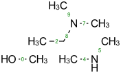
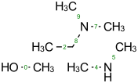

Indigo 1.1.11¶
| Date: | 2 July 2013 |
|---|
Summary¶
New features and improvements:
- Fingerprints computation is 2-4 times faster
- Restored source compatibility with MinGW compiler
- New IndigoObject methods for stereocenters: stereocenterGroup, setStereocenterGroup, markStereobonds [1] (details)
- New option to specify atom colors individually via s-groups: render-atom-color-property (details)
- New rendering option for bond width: render-bond-line-width (details)
- New chirality validation method: validateChirality [2]
- Indigo Java API uses Maven instead of Ant for building (details)
- Maven repository for Indigo Java API packages (details)
- New method that releases memory for the Indigo Object: dispose
- Indigo Java doesn’t remove dll-modules in the temporary directory that results in a faster loading
- CDXML file format export (details)
- New methods to read data from buffers: loadBuffer, loadString, iterateSDF, iterateSmiles, iterateCML (details)
- Indigo Python API binding works for Python 3 as well as for Python 2
- New SGroup-related methods: getGenericSGroup, getMultipleGroup, getRepeatingUnit, data [3] (details)
- New method to remove a set of bonds: removeBonds [4] (Details)
Bugfixes:
- Memory leak in the grossFormula API method in case of exceptions during computation
- Molfile substitution flag value was set to 4 instead of 6
- render-bond-length option was ignored if render-image-size were set. Now render-bond-length parameter specifies maximum bond length even if image size is specified
- Either cis-trans flag was ignored in Molfile V3000 loader
- Indigo options may be used from a previous Indigo instance when new Indigo instance is allocated
- Transform throws an exception when called on a molecule from SDF file [5]
- .NET bindings interprocess race condition that could happen on the first run. Thanks to dimitry42 for the pull request [6]
- Molecule with up/down bond is saved as chiral
Details¶
Maven Central Repository¶
All the Indigo Java packages are uploaded to The Central Respository.
| GroupId | ArtifactId |
|---|---|
| com.ggasoftware | indigo |
| com.ggasoftware.indigo | indigo-inchi |
| com.ggasoftware.indigo | indigo-renderer |
Just add a dependency to your Maven project to download Indigo Java API automatically:
<dependencies>
...
<dependency>
<groupId>com.ggasoftware</groupId>
<artifactId>indigo</artifactId>
<version>1.1.11</version>
</dependency>
...
</dependencies>
Core Indigo API module¶
Stereocenters methods¶
There are new stereocenterGroup and setStereocenterGroup method to get/set stereocenter group:
# Load structure
m = indigo.loadMoleculeFromFile('data/stereogroups.mol')
indigo.setOption('render-comment', 'Before')
indigoRenderer.renderToFile(m, 'result_1.png')
for s in m.iterateStereocenters():
print "atom index =", s.index(), "group =", s.stereocenterGroup()
m.getAtom(1).changeStereocenterType(Indigo.OR)
m.getAtom(1).setStereocenterGroup(1)
m.getAtom(5).setStereocenterGroup(1)
indigo.setOption('render-comment', 'Stereocenter groups and types were changed')
indigoRenderer.renderToFile(m, 'result_2.png')
{kind=link}

{kind=link}
atom index = 1 group = 0
atom index = 2 group = 1
atom index = 5 group = 2
The markStereobonds method set up/down bond marks if a stereoconfiguration were changed manually, or if it should be reset [1]:
m = indigo.loadMoleculeFromFile('data/stereobonds.mol')
indigo.setOption('render-comment', 'Before')
indigoRenderer.renderToFile(m, 'result_1.png')
m.markStereobonds()
indigo.setOption('render-comment', 'After')
indigoRenderer.renderToFile(m, 'result_2.png')
{kind=link}
{kind=link}
Chirality validation¶
Molecule can have a chirality flag even if it not chiral. There is a new validateChirality that checks if a molecule matches to its mirror and clears chirality flag in this case [2].
m = indigo.loadMolecule("C[C@@H]1C[C@H](C)C[C@@H](C)C1")
indigo.setOption('render-comment', 'Before')
indigoRenderer.renderToFile(m, 'result_1.png')
print("Before: " + m.smiles())
m.validateChirality()
indigo.setOption('render-comment', 'After')
indigoRenderer.renderToFile(m, 'result_2.png')
print("After: " + m.smiles())
{kind=link}
{kind=link}
Before: C[C@H]1C[C@H](C)C[C@@H](C)C1
After: C[C@H]1C[C@H](C)C[C@@H](C)C1 |&1:1,3,6|
SGroup methods¶
There are 5 s-groups are support by Indigo, but several methods were missing [3]:
- There are new getGenericSGroup, getMultipleGroup, getRepeatingUnit methods along with already existing getDataSGroup and getSuperatom:
- data() returns SGroup data information
m = indigo.loadMoleculeFromFile("data/rep-dat.mol")
indigo.setOption("render-atom-ids-visible", "true");
indigoRenderer.renderToFile(m, 'result_1.png')
# print multiple group information by index
mul_group = m.getMultipleGroup(0)
print "Multiple group #", mul_group.index(), "atoms:"
for atom in mul_group.iterateAtoms():
print " ", atom.index()
mul_group.remove()
indigoRenderer.renderToFile(m, 'result_2.png')
# print data s-group description and data
data_group = m.getDataSGroup(0)
print "data s-group description =", data_group.description()
print "data s-group data =", data_group.data()
{kind=link}
{kind=link}
Multiple group # 0 atoms:
2
3
4
11
12
13
8
9
10
data s-group description = dataname
data s-group data = datavalue
Buffers¶
There are standard methods to load structures from files like loadMoleculeFromFile and iterateSDFile. But if it is necessary to load an SDF from memory (for example, if you are writing web service) then there are new methods to create buffers and load structure from buffers:
- loadBuffer, loadString - methods to create stream from a buffer or a string
- iterateSDF, iterateSmiles, iterateCML - methods to iterate structures from a stream
data = "S(C1C=CC(=CC=1)F)C1C=C(C=CN=1)CN 43528886\n"
data += "BrC1(C=CC=CC1)S(NC1C=CC(C)=CC=1)(=O)=O 504161"
stream = indigo.loadString(data)
for molecule in indigo.iterateSmiles(stream):
print molecule.name(), molecule.canonicalSmiles(), molecule.molecularWeight()
43528886 NCC1=CC(=NC=C1)SC1C=CC(F)=CC=1 234.292541504
504161 CC1=CC=C(C=C1)NS(=O)(=O)C1(Br)CC=CC=C1 328.224761963
CDX Export¶
There is a new CDXML export functionality via rendering a grid of structures with renderGridToFile method. This method automatically aligns structures, adds text comments, and splits the whole document on pages.
arr = indigo.createArray()
for m in indigo.iterateSmilesFile("data/pubchem-slice.smi"):
m.setProperty("title", "Mass: %f\nFormula: %s" % (m.molecularWeight(), m.grossFormula()))
arr.arrayAdd(m)
indigo.setOption("render-grid-title-property", "title")
indigo.setOption("render-comment", "title:\nSet of molecules")
indigoRenderer.renderGridToFile(arr, None, 3, "result.cdxml")
removeBonds method¶
There is a new method removeBonds that can remove a set of bonds specified by indices. This method is similar to removeAtoms method [4].
m = indigo.loadMolecule('OCCC1CNCCN1C')
m.layout()
indigo.setOption("render-bond-ids-visible", "true");
indigoRenderer.renderToFile(m, 'result_1.png')
# remove bonds by indices
m.removeBonds([1, 3, 6])
indigoRenderer.renderToFile(m, 'result_2.png')
{kind=link} 

{kind=link}
Rendering module¶
Atom coloring¶
Indigo can use a specified color for each atom and interpolate these colors for bond rendering.
# Load structure
m = indigo.loadMolecule('CC(=C)C1=C(C)C(C)=CC(O)=C1NCCCCC=O')
# Add data sgroups with 'color' description
m.addDataSGroup([0, 1, 2, 3], [], "color", "0.155, 0.55, 0.955")
m.addDataSGroup([4, 5, 6, 16, 17, 18], [], "color", "0.955, 0.155, 0.155")
indigo.setOption("render-atom-color-property", "color")
indigo.setOption('render-coloring', False)
indigoRenderer.renderToFile(m, 'result.png')

For a larger example see Atom Coloring.
Bond line width¶
m = indigo.loadMolecule('CC1=C(Cl)C=CC2=C1NS(=O)S2')
# Default visualization
indigo.setOption('render-comment', 'default')
indigoRenderer.renderToFile(m, 'result_1.png')
# Bonds are twice thicker
indigo.setOption('render-bond-line-width', 2.0)
indigo.setOption('render-comment', 'render-bond-line-width=2.0')
indigoRenderer.renderToFile(m, 'result_2.png')
# Bonds are twice thinner
indigo.setOption('render-bond-line-width', 0.5)
indigo.setOption('render-comment', 'render-bond-line-width=0.5')
indigoRenderer.renderToFile(m, 'result_3.png')
{kind=link}
{kind=link}
{kind=link}
Footnotes
| [1] | (1, 2) Request by Karen Karapetyan: https://groups.google.com/d/msg/indigo-general/WP4n6jbYLac/_-WjCd0bwYgJ |
| [2] | (1, 2) Request by Marcin: https://groups.google.com/d/msg/indigo-general/A8VtF-51viw/E093AE-b-pwJ |
| [3] | (1, 2) Request from Karen Karapetyan: https://groups.google.com/d/msg/indigo-general/9jFif0s-QtQ/gcr_NQZskR8J |
| [4] | (1, 2) Request from Vincent: https://groups.google.com/d/msg/indigo-general/efPQ81fQt4U/vR8UMv4lXSMJ |
| [5] | Bug report from Vincent: https://groups.google.com/d/msg/indigo-bugs/lZj_Oe7u_Bc/oh35YIblowcJ |
| [6] | Pull request by dimitry42: https://github.com/ggasoftware/indigo/pull/6 |